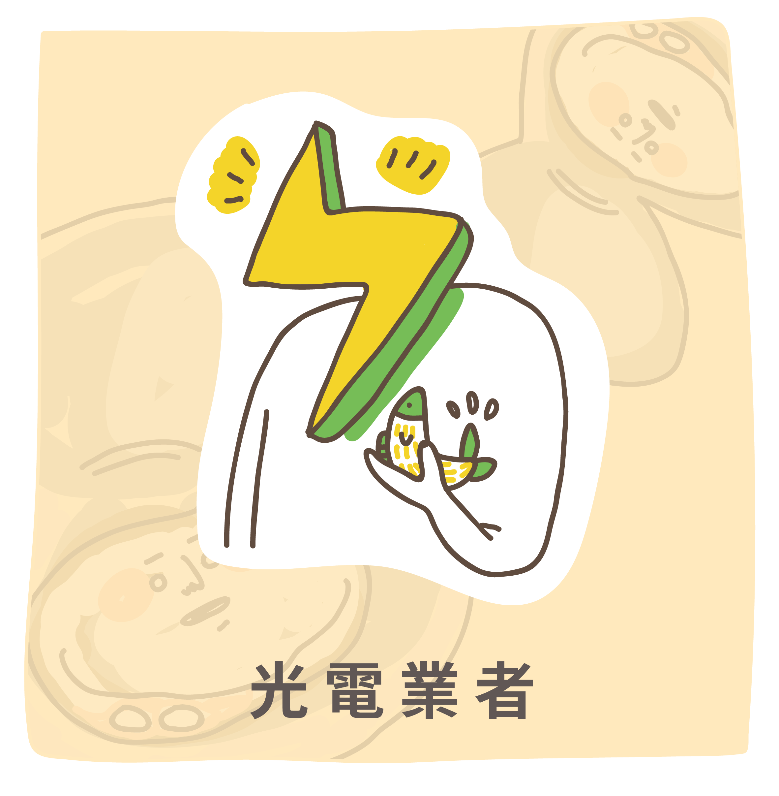
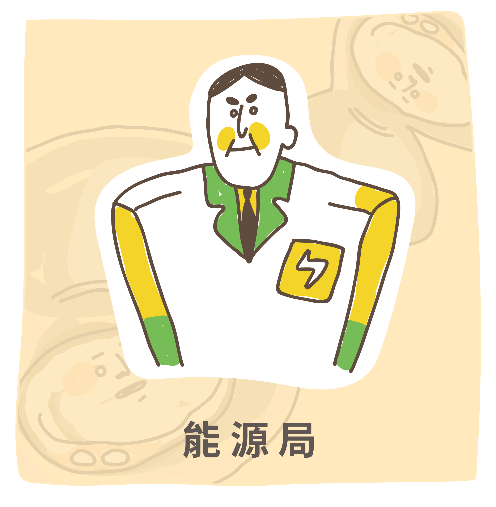
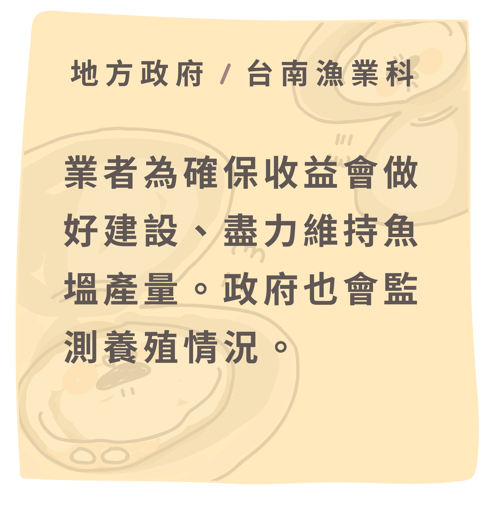
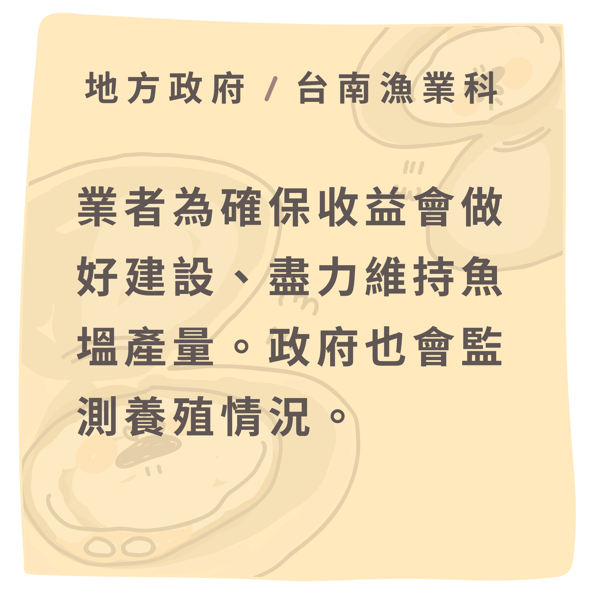
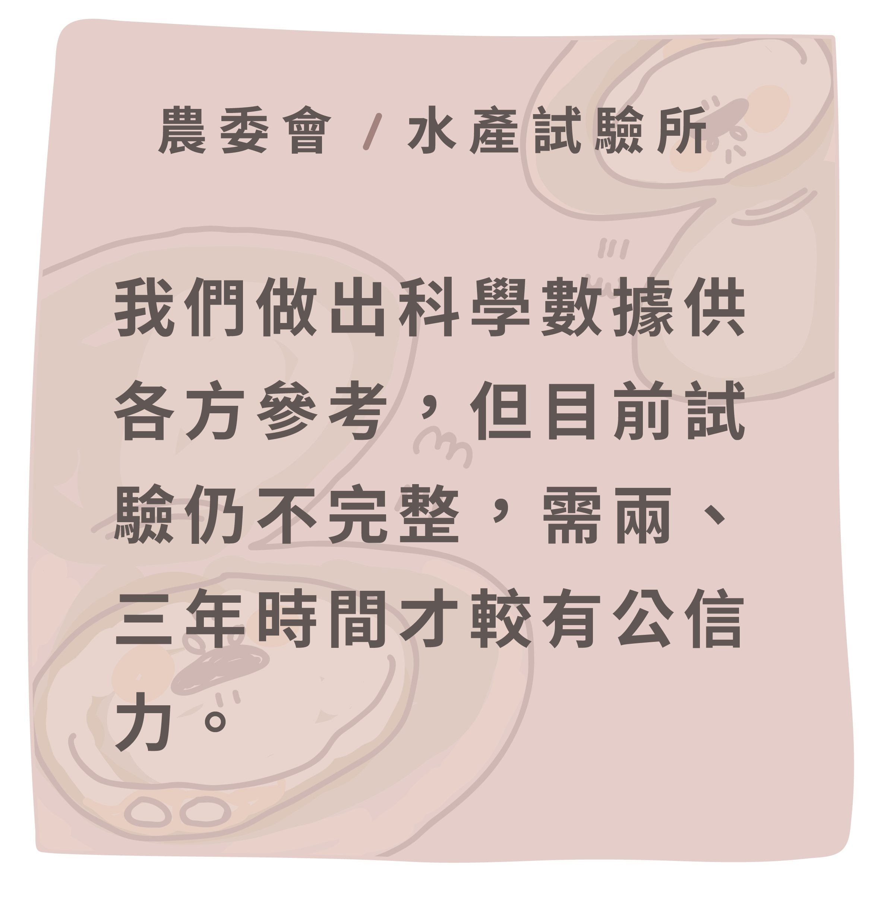
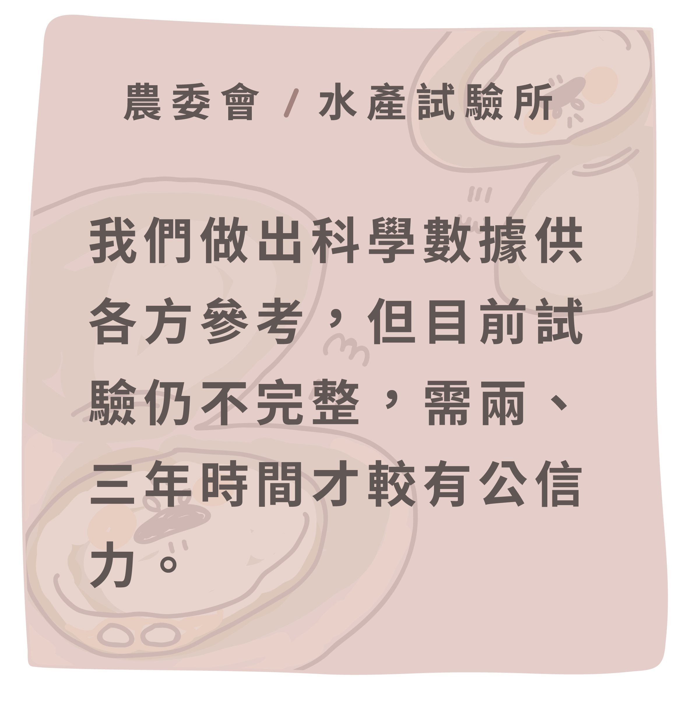
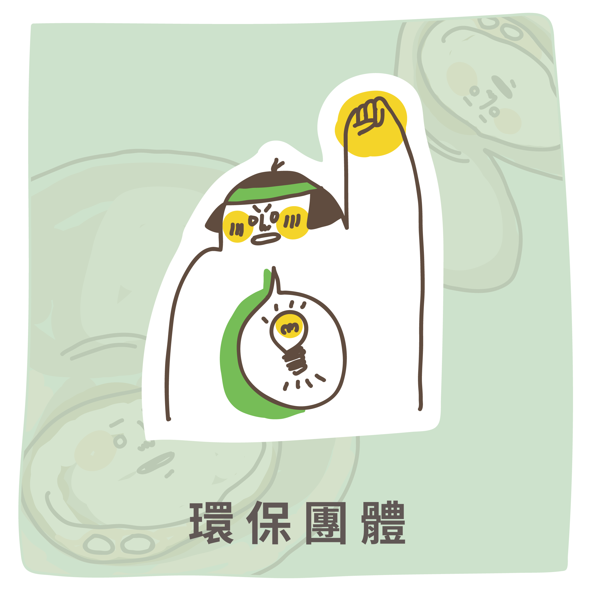
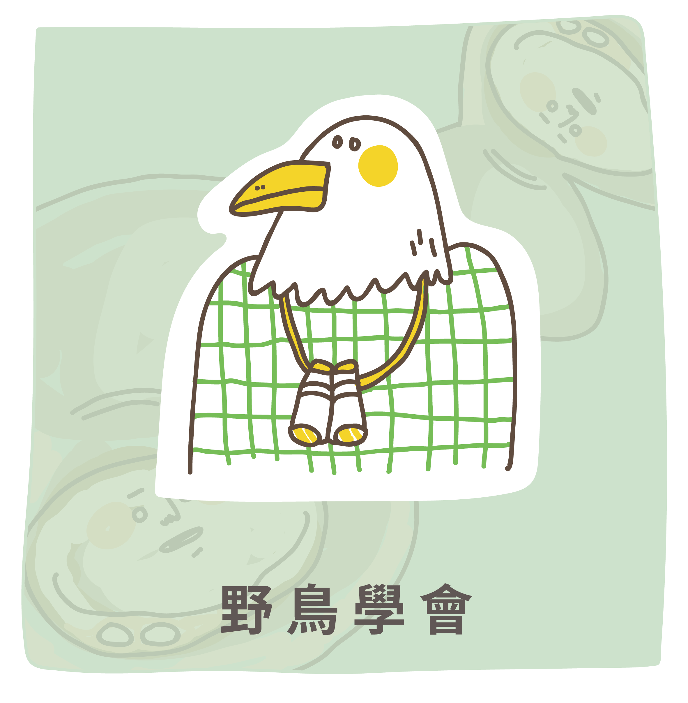
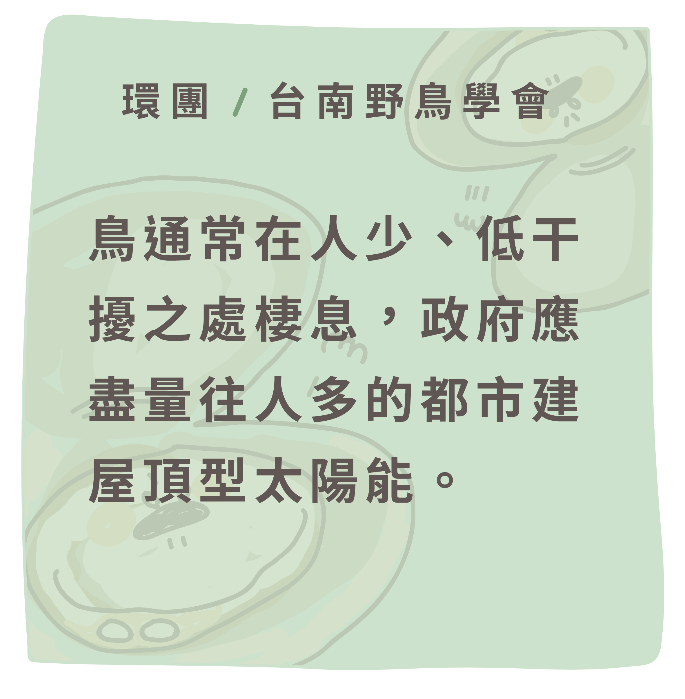

理想大於現實的光電目標
預定地未經盤點就開辦？
預定地未經盤點就開辦？
七股正在上演的漁電共生是全球首創的願景。根據行政院農業委員會漁業署108年統計，台灣魚塭總面積約3萬公頃，且超過半數在日照時間較長的中南部地區。漁電共生構想在魚塭上裝設太陽能板、一地多用，讓狹小的台灣擠出土地，增加太陽能板覆蓋率，進而提升再生能源的發電量。
近八年，台灣太陽能的發電占比逐年上升，政府喊出114年綠能發電要占比達20%；同年度，光電預計要占再生能源的發電量高達四成。太陽能極可能是未來的綠電主力。
太陽光電分為屋頂型與地面型，漁電共生屬於地面型。政府原本認為地面型光電設施可大規模、大面積推廣。不過，目前業者圈設的案場受到不少地方聲浪反彈而踩剎車。因此，經濟部於108年重新調整二者的容量配比，調降地面型光電的目標容量。
國立政治大學地政學系助理教授戴秀雄指出，政府先預設光電的發電量目標，再開始盤點所需的土地，「怎麼可能是用裝置容量倒回來算所需面積？」他直言，「如果台灣沒有適合的地點可以種電，那你還算所需面積，根本是莫名其妙的事情。」
除了未考量光電所需的土地面積，戴秀雄亦表示，能源局主導釋出種電土地，卻僅粗略劃分不利耕種區、水域空間，沒有考慮位置、原土地使用方式、設施裝置形式等，「目前釋出的區位條件極度不足，根本沒有思索到底光電適合什麼地點。」
漁電共生一片美意，政府盼推展再生能源與養殖漁業升級，讓綠電與魚塭生態共榮。然而，選址未經審慎評估，反讓光電業者與當地養殖戶拉鋸。七股已成為全台各處地面型光電設施的縮影。
不再「黑琵」？
架設太陽能板恐不利七股生態
架設太陽能板恐不利七股生態
台南七股是全世界最大的黑面琵鷺聚集地，如今每年有4千多隻黑面琵鷺來台過冬。國際級濕地受國家公權力保護，不得任意開發；但一條路寬20公尺的柏油路外，漁民賴以為生的文蛤養殖池卻可能面臨大量太陽能板的進駐，生態岌岌可危。
七股魚塭雖不屬於一級保護區，卻是黑面琵鷺來台過冬時主要的覓食區。台南市野鳥學會總幹事林岱瑢指出，黑面琵鷺飛抵台灣後，會先在台江國家公園內棲息，經過充足的休息後，再至附近的魚塭尋找食物。
成群的黑面琵鷺在七股魚塭地覓食，這裡的淺坪漁場適合候鳥等物種停棲，儼然成為生態寶地。 圖／台南市野鳥學會提供
出於海鳥的生物習性，黑面琵鷺偏好在開闊水域活動，並常以文蛤養殖池中的小魚、小蝦為食。林岱瑢解釋，在魚塭上方架設太陽能板，若黑面琵鷺誤將面板的反光當作水面的波光，牠們在降落時可能因此撞到太陽能板而受傷。此外，黑面琵鷺飛行時俯瞰的視野也可能遭太陽能板阻擋，導致牠們誤判魚塭不存在，進而喪失主要的食物來源。
另外，太陽能板遮光亦可能讓水中的藻類無法進行光合作用，影響魚塭的「底泥」。林岱瑢說：「底泥中居住的昆蟲，像是沙蠶和紅蟲，牠們是所有動物的食物來源，也是影響生態最大的。」若位於食物鏈底層的生物減少，上端的掠食者如黑面琵鷺等海鳥首當其衝，七股也許將不再是黑面琵鷺最大的度冬之地。
除了候鳥這群遊子，七股更有站穩一輩子的居民。當一面面太陽能板蓋上魚塭，漁民們也不禁擔憂：我還能保有原本的工作嗎？
要種電了
那些做塭仔的人們呢？
那些做塭仔的人們呢？
下午四點，太陽尚未西下。吳新榮檢查過文蛤，放完蜈蚣網、重新撐起篙，成為魚塭上的一片剪影。他划離魚塭，前往魚寮——這是漁民們固定的茶會時間。
魚寮是他們的秘密基地。六、七個漁民圍坐長桌，說要「交換情報」，實則邊沏茶、邊看電視，閒聊最近氣候和文蛤產量。他們自幼跟著爸爸在魚塭摸蛤仔，如今領著兒子走進魚塭，手把手教他撐起養活世代的長篙。「自十幾歲就佇遮，（開始做養殖）攏二三十冬啊。」
然而漁電共生實行後，土地被轉租給業者、漁民無地可養殖，這光景也許將不復存在。魚寮化身為作戰會議室，70、80位居民共組「七股土地自救會」，綁上頭巾、備好蛤殼、搭上夜半客運，在行政院、台南市政府留下他們的怒吼聲：「求生存！」漁民擔憂道：「心情七上八下啊，想說帶這麼多人去，政府不知道有沒有在聽？」但面對消極的政府，他們只能回到魚寮，泡茶、喝茶。日復一日，陷入漫長等待。
「這次太陽落下之後，不知道還能不能看到七股的夕陽？」
107年，政府開放業者自行圈地、劃設漁電共生專區。台鹽綠能作為光電業者與七股當地住民的仲介平台，與地主承租並整合土地，提交審核後供光電業者進駐，契約一簽就是20年。截至目前，七股已有約450公頃土地被劃設為漁電共生案場。
依據《行政院農業委員會養殖漁業經營結合綠能設施專案計畫審查作業要點》（以下簡稱《作業要點》），漁電共生專區面積至少須達25公頃農業用地，也因此「土地容易整合」是光電業者選址時的重大考量。台鹽綠能副總經理郭政瑋表示，「一個零散的場域沒辦法做整體開發。」例如配電饋線的資源，若以分散的管線匯整電力，相較起統一饋線須耗費更多經費。此外，台南市政府農業局漁業科指出，業者亦會考量較便宜的土地價格。
七股沿海土地資源保護協會會長、當地漁民楊惠欽解釋，七股以養殖文蛤為主，文蛤池面積廣大又分布集中，對光電業者而言較容易整合。而相對於彰化、雲林、嘉義等文蛤養殖區，七股因產量較低，地價也便宜上百萬。因此，七股被光電業者列為優先實施漁電共生的案場。
七股沿海土地資源保護協會會長楊惠欽講述當地文蛤養殖特點，因養殖密度低，產量相較其他區域少，因此地價便宜，吸引業者紛紛進駐。 圖／萬巧蓉攝
《作業要點》中亦規範，推動漁電共生專區至少須取得七成地主及原承租養殖戶的同意。但就算地主和漁民都已簽署同意書，就代表真的同意了嗎？
七股的漁民有七成都藉由租賃土地進行養殖生產，租金大約為每年每公頃3萬元。然而同一時間，光電業者為確保能獲取土地，便以雄厚資本與政府針對綠能政策的補貼為後盾，以每公頃30萬元的價格租地。地主受高額租金吸引紛紛轉租，失去土地的漁民形同失去生計。
而七成同意的門檻，反成變相剝削的開端。部分地主希望賺取租金，強迫漁民簽署「養殖戶意向同意書」，漁民若不願配合，地主便要脅將立刻終止租約。漁民郭永慶無奈地說：「不簽你就沒文蛤做了，簽了至少現在可以做。」儘管同意書中明文規定應優先保障原養殖戶承租，地主仍可以選擇不續約，以養殖人頭替代原承租戶。
漁民郭永慶批評政府用以確保承租漁民意願的規範，實際上無法如實保障他們的權利，僅淪為空談。 圖／陳子瑜攝
對此，台鹽綠能則提出修正，在土地交易完成後便與漁民簽署漁場使用契約，一次簽約五年。未來漁民只須以原先租金的六成價格繳付漁場使用費，便可繼續養殖、完成「漁為主、電為輔」的共存願景。郭政瑋強調，台鹽綠能自107年起舉辦超過170場說明會，每張專案設計圖、每個案場都會取得漁民的同意，並保障其工作權。
縱使漁民能保有工作，漁民亦擔憂太陽能板遮蔽魚塭，可能影響文蛤產量。農委會規範，漁電共生的太陽能板遮蔽率必須小於40％，同時漁獲量須維持原有的70%以上。但郭永慶質疑，「極端氣候文蛤都已經很難養了，怎麼可能六成（沒被遮蔽）的土地養出七成的產量？」台南市政府農業局漁業科則回應，七成產量是彈性數字，關注實際產值更為重要。為此，養殖戶應加強漁場管理與環境改善。
因此106年起，農委會水產試驗所共進行三次模擬試驗，更於107年起設置立柱式太陽光電設施，分別測試遮蔽率0％、40％、70％對水質環境及文蛤成長的影響。結果顯示，40％遮蔽率時，文蛤成長狀況最佳，且能維持70％以上產量。農委會水試所海水繁養殖研究中心主任葉信利表示，漁電共生是全世界首見，因此缺乏他國案例借鑑，「雖然目前做的實驗還不是很完整，但有一些基本的數據可以參考。」108年，水試所進一步在七股推動「漁電共生試驗育成基地」，徵求業者進駐試行，盼及早投入實體營運。
行政院農業委員會水產試驗所於106年起，在雲林台西試驗場進行漁電共生模擬實驗。圖為該處設置的棚架式太陽能板，用以測試不同遮蔽率對於養殖物種的影響。 圖／農委會水試所提供
台南市政府農業局漁業科則表示，地方政府須申報文蛤的放養量，等上市時再重新核對，以數據確保有七成產量。若發現有「假養殖真種電」的情況，將撤銷該地的農業設施容許使用。「損失最大的是綠能業者。」他亦直言，若漁電共生設置狀況不佳，光電業者投資的億元資金便可能因撤照而一夕作廢，因此業者更希望能同時保障養殖產量及發電效能。
然而郭永慶指出，光電業者若遭撤照，反而可能向養殖戶求償。當地地主兼漁民黃清泉補充，若遭遇颱風、淹水等天災，發電量不如預期，業者甚至可能要求地主減租。郭永慶進一步質疑水試所的養殖試驗，「我們不能參與他的檢驗結果，實驗報告結果隨便政府在講的。」他強調，政府應實際在魚塭劃設漁電共生示範區，確認無虞再讓其他地區實行。
七股環境條件嚴峻
地貌與生態特殊性成選址關鍵
地貌與生態特殊性成選址關鍵
郭永慶站在竹筏上撐篙，輕輕地划過魚塭水面，他以多年經驗目測魚塭水質、判斷水深30公分下的文蛤生長狀況。在全台文蛤產量中，七股就占了三成，這裡更是全台唯一不抽取地下水養殖的地區。楊惠欽感嘆道：「西海岸幾乎開發的差不多了，只剩七股保留原始地貌。」
為配合土地生命週期，當地漁民採取引海水灌溉的淺坪低密度養殖法，友善利用資源，並與當地生態共構人地互存的景象。
當地居民愛護這片淨土的決心有歷史脈絡可循。約20年前，七股被財團相中，欲建造七輕石化廠、煉鋼廠，之後亦曾計畫興建焚化爐，都被在地居民擋下。七股居民自救會會長黃嚴國回憶過往抗爭經驗，「我當初反對七輕就是用生命在擋、就是不要這塊地被汙染，守住了就覺得很值得。」如今七股再次被選為開發地，漁民擔心從前守護七股的努力將前功盡棄。
七股居民自救會會長黃嚴國講述地方歷史，提及過去一度計畫要被開發的七股，是如何為當地居民守護、成為西海岸僅剩的淨土。 圖／萬巧蓉攝
雖然漁電共生與以往開發案性質不同，強調發展乾淨能源並與養殖漁業互利，然而，居民擔憂漁電共生與七股傳統的淺坪養殖方式難以並行。黃清泉認為養殖魚類的池子較深且堤岸較大，相對文蛤池更適合發展漁電共生，「文蛤池較淺，所以堤岸較窄，機器不可能開進去。」吳新榮也表示，相對於友善養殖的魚塭，於地層下陷或原先就不適合耕耘之處實施，較不會對環境、社會造成影響。
此外，七股是濱海之地，魚塭因引海水灌溉，鹽度可高達4%。與淡水養殖池2%以下的鹽度相比，鹽份高上許多。漁民擔憂魚塭鹽份高可能導致太陽能設施鏽蝕、汙染魚塭。「號稱不生鏽的『白鐵』，到我們這邊也是兩年就爛掉。」黃清泉指出七股鹽害的嚴重性。他以澎湖太陽能板為例，該設施未滿五年就因不敵鹽害拆除，更遑論是簽約期長達20年的七股。除了鹽害，七股也有風勢大、颱風侵襲等恐損壞太陽能板的問題。
對此，養殖漁業出身的旭康漁業顧問公司總經理黃國良提出不同見解。在他的規劃下，太陽能板將強化成雙層玻璃，避免鏽蝕。此外，建置太陽能板的方式也會配合每個漁場的地型與養殖物種而有不同設計，他批評，「外面的光電業者都是一個模板一直套。」
黃國良期許自己做光電的同時能升級漁場基礎建設。他指出，台灣養殖漁業缺乏投資，所以無法與國際競爭，「承租戶怎麼可能砸錢去幫地主做（養殖漁業基礎建設）。」因此黃國良認為若能適切推行漁電共生、為漁場設備升級，便能幫助本土養殖漁業。台鹽綠能亦承諾將養殖戶繳交的部分租金與光電業者獲利投入至公共基金，用以協助導入新形態養殖技術及科技化養殖設備。郭政瑋表示，透過強化魚塭建設、推廣漁業產銷履歷等作為，盼能創造光電與養殖漁業雙贏局面。
漁電共生異言堂
七股要推漁電共生，他們有話說！
-


-


-


-


-


-
 
 -
 
 -


-

楊惠欽一語道破漁電共生在七股引發爭議的核心，「漁電共生的法規規範只是一個很大的框，它說可能要注意什麼，但沒有說怎麼做。」
因此，光電業者須在廣大土地中自行劃設專區區域，並與地主協商整合土地，卻因不了解在地產業和生態環境而遭抗議；地主則擔憂業者提案未考量當地氣候及養殖方式，可能無法獲得預期租金；漁民不僅害怕再無土地保障他們養家活口，未因地制宜的光電設施更恐導致漁獲量銳減。然而土地租賃、漁場使用合約等皆屬於私人契約，政府難以介入管理，各方爭議成了打不開的死結。最後，七股一旦實施漁電共生，原保有的候鳥生態以及友善環境的養殖手法都可能消失殆盡。
楊惠欽指出，綠電政策立意良善，但若考量不周導致引起地方爭議，以失敗告終，民眾反而會怪罪綠電。吳新榮則回溯爭議的源頭，「我們這邊的人不是不贊成漁電共生，而是認為要找比較適合的地方做。」
光電設施選址審查不周
「環社檢核」應運而生
「環社檢核」應運而生
若希望選出適切的案場推行漁電共生，勢必需要審核機制把關。現行地面型光電設施的審核流程由業者發動，業者先整合土地後，再遞交申請該地為種電案場，審核則由相關的各政府局處負責。不過，地球公民基金會主任李翰林指出此套過程的缺失，即是沒有機關負責審查業者提交的場址。李翰林進一步說明，選址是案場規劃的第一步，若無任何管控，後續自然易有爭議。
台南市農業局漁業科說：「在（選址爭議）開始發展前我們確實沒有想到，很單純地想說在魚塭上面加光電板而已。」七股便是在忽視選址的政策漏洞下成為漁電共生案場，引發爭端。

事實上，台灣的開發案多需經過「環境影響評估」（以下簡稱環評），開發單位得於評估後提出對策，否則無法獲得開發許可。然而，光電設施被認為對環境的衝擊較小，因此七股養殖地便不適用於環評。而根據《作業要點》規定，架設太陽能板前應進行可行性評估，但僅限於第一級環境敏感地區，並無涵括生態熱點等其他可能受衝擊的地帶。
為彌補審核制度的不足，並解決地面型光電設施的選址疑慮，七股居民與環團草擬「環境與社會檢核」（以下簡稱「環社檢核」），檢核項目包括環境衝擊、社會影響、民眾參與及資訊公開等部分，供政府與業者參考。經過民間與經濟部的磋商後，今年四月，環社檢核1.0版本出爐。
環社檢核將被納入光電專區審核流程，楊惠欽解釋，環團力求能藉此篩出低影響、適建光電的區位，成為示範案場。「讓沒有爭議的（地方）先做，對地面型的推展速度才會快。」他表示，環團也盼望綠電產量提升，但仍須要求政府更細緻地規範選址，並重視地方公民的參與。
楊惠欽強調，環社檢核也能讓光電業者不踩雷區，以免投資與整合完成，卻發現案場有種電疑慮。業者為了要符合環社檢核的項目，必得對選址有更多元的人文、生態面考量，避免七股的困境在他處重演。
地面型光電選址怎麼做？
近幾年，地面型光電面臨諸多爭議，使設置腳步緩慢。設施究竟蓋在哪裡好？我們統整地球公民基金會與政大地政學系助理教授戴秀雄的建議，形成一套選址評估的機制。透過這些步驟，盼能在推動太陽光電與能源轉型的同時，找到適合的區位，讓光電業者不碰壁，也能減少案場的環境與社會破壞，達成綠能台灣的目標。
農委會於109年公布「較無社會及生態疑慮之漁電共生土地初步盤點」，顯示七股僅有2公頃土地較適合作為漁電共生案場。然而，早在選址的規劃盤點前，七股的案場申請面積已近450公頃。不只是七股，台東知本濕地、桃園埤塘、嘉義布袋鹽田等地的光電計畫也因選址疑慮產生不少爭議。
政府欲發展再生能源，並採友善環境的方式發電；七股居民殷切期盼能守護生態與人文特色。雙方共同在作一個永續台灣的夢，卻走上分歧的道路。七股敲響能源轉型政策的警鐘——綠電希望守護環境，但若推行不慎，可能成為破壞地方環境的雙面刃。政府應加緊腳步改善當前的規範與流程，別讓漁電共生淪為空談。